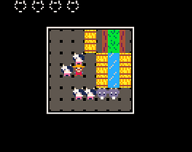

I made this game in October 2021 for Ludum Dare 49. I made this game using Pico-8, and I had a blast doing it! I just loved the simplicity of Pico-8 compared to big bulky engines like Unity.
With Pico-8, the engine is so simple you can just hold it all in your head, and then you try to figure out clever ways of achieving things. In constrast, the Unity engine feels so complex that there are probably 100 ways to do something, and when you begin, you can almost never just "figure it out" and almost always have to follow tutorials, and if you somehow end up following different tutorials, they may tell you to do things in different ways, which makes you a bit more confused.
I also like that I managed to do this full game in 48 hours. I eventually went back on it and took a couple of evenings to make the code not suck as much, and even expanded on it!
This is probably the game I've made that I'm the most proud of, and when people ask me what game I've made for jams in the past, I always point them to this one.